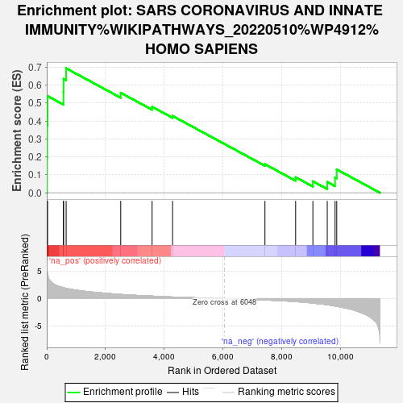
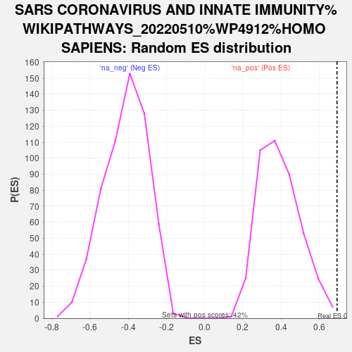

| | | Dataset | deg_con |
| Phenotype | NoPhenotypeAvailable |
| Upregulated in class | na_pos |
| GeneSet | SARS CORONAVIRUS AND INNATE IMMUNITY%WIKIPATHWAYS_20220510%WP4912%HOMO SAPIENS |
| Enrichment Score (ES) | 0.6930043 |
| Normalized Enrichment Score (NES) | 1.7654228 |
| Nominal p-value | 0.004796163 |
| FDR q-value | 0.30582 |
| FWER p-Value | 0.991 |
Table: GSEA Results Summary

Fig 1: Enrichment plot: SARS CORONAVIRUS AND INNATE IMMUNITY%WIKIPATHWAYS_20220510%WP4912%HOMO SAPIENS
Profile of the Running ES Score & Positions of GeneSet Members on the Rank Ordered List
| SYMBOL | RANK IN GENE LIST | RANK METRIC SCORE | RUNNING ES | CORE ENRICHMENT | | 1 | STAT2 | 8 | 5.536 | 0.1979 | Yes |
| 2 | IRF9 | 14 | 5.027 | 0.3779 | Yes |
| 3 | MAVS | 29 | 4.510 | 0.5385 | Yes |
| 4 | IKBKE | 569 | 1.999 | 0.5626 | Yes |
| 5 | TYK2 | 572 | 1.994 | 0.6340 | Yes |
| 6 | IRF3 | 660 | 1.860 | 0.6930 | Yes |
| 7 | IFNAR1 | 2518 | 0.765 | 0.5565 | No |
| 8 | STAT1 | 3586 | 0.455 | 0.4786 | No |
| 9 | IFNAR2 | 4283 | 0.290 | 0.4275 | No |
| 10 | TRAF3 | 7427 | -0.246 | 0.1589 | No |
| 11 | IFIH1 | 8472 | -0.542 | 0.0861 | No |
| 12 | TICAM1 | 9059 | -0.813 | 0.0636 | No |
| 13 | TLR3 | 9548 | -1.101 | 0.0600 | No |
| 14 | JAK1 | 9814 | -1.345 | 0.0848 | No |
| 15 | TBK1 | 9871 | -1.388 | 0.1297 | No |
Table: GSEA details [plain text format]

Fig 2: SARS CORONAVIRUS AND INNATE IMMUNITY%WIKIPATHWAYS_20220510%WP4912%HOMO SAPIENS: Random ES distribution
Gene set null distribution of ES for SARS CORONAVIRUS AND INNATE IMMUNITY%WIKIPATHWAYS_20220510%WP4912%HOMO SAPIENS